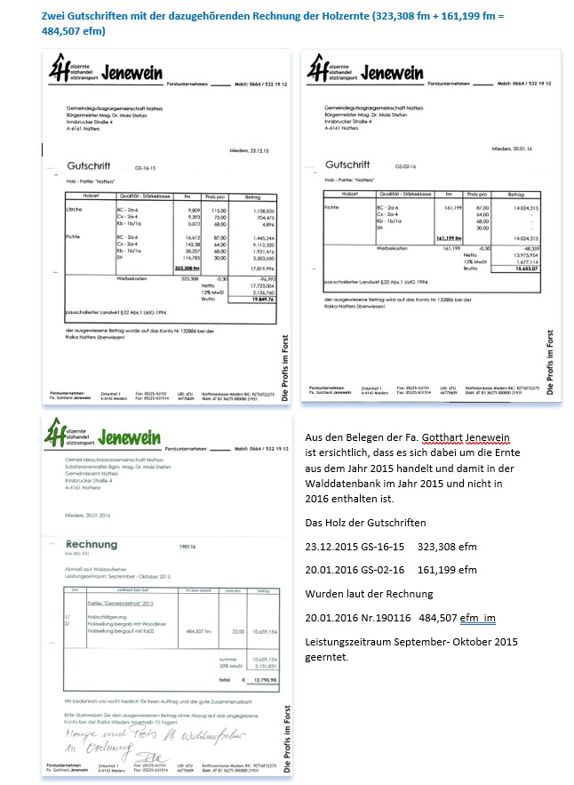
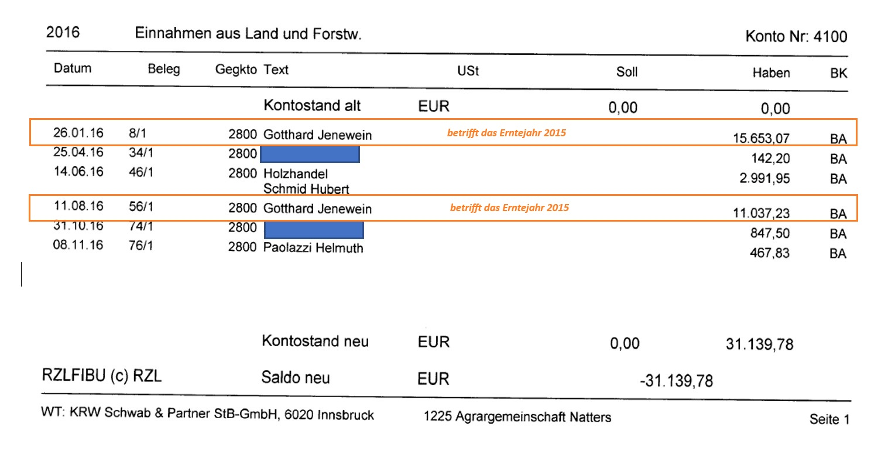
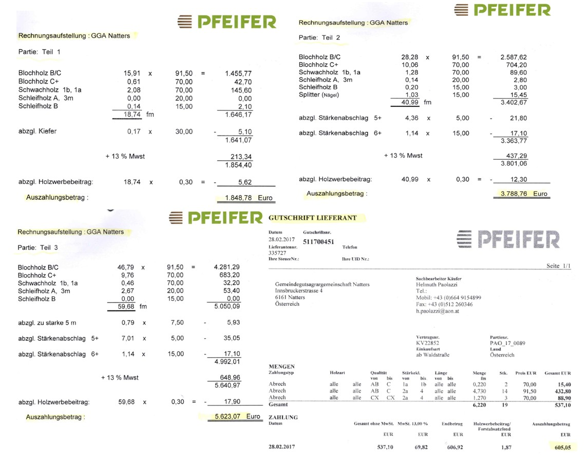

Die offizielle Jahresabrechnung 2016 der GGAG wies Gesamteinnahmen von € 31.139,78 aus. Die detaillierte Belegprüfung beweist jedoch: Davon stammen € 26.690,30 aus Holz, das nachweislich bereits im September/Oktober 2015 geschlagen wurde.
Der tatsächliche Holzertrag für das Erntejahr 2015 beläuft sich auf € 31.695,70. Zwei massive Gutschriften der Fa. Jenewein (Leistungszeitraum September-Oktober 2015 laut Rechnung Nr. 190116) wurden erst im Jahr 2016 verbucht:
| Buchung | Erntezeit | Firma / Beleg | Menge | Einnahmen | Kosten |
|---|---|---|---|---|---|
| 04.11.2015 | 19.10.2015 | MR-Service | 25,2 efm | € 1.366,87 | am Stock |
| 30.12.2015 | 03.12.2015 | MR-Service | 28,1 efm | € 2.141,12 | am Stock |
| 31.12.2015 | Sep-Okt 2015 | Fa. Jenewein | 323,3 efm | € 19.849,76 | € 12.790,98 |
| 26.01.2016 | Sep-Okt 2015 | Fa. Jenewein (GS-02-16) | 161,2 efm | € 15.653,07 | - |
| 10.08.2016 | Restmaß 2015 | Fa. Jenewein | 210,0 efm | € 11.037,23 | € 5.561,37 |
| Summe 2015 | - | - | 747,8 efm | € 50.048,05 | € 18.352,35 |
Reiner Holzertrag 2015: € 50.048,05 minus € 18.352,35 = € 31.695,70

Bereinigt man das Kontoblatt 4100 um die Zuflüsse aus der Ernte 2015 (Gesamtsumme € 26.690,30), zeigt sich der tatsächliche Ertrag, der aus dem Holzeinschlag des Jahres 2016 verbucht wurde: Es wurden für das Erntejahr 2016 lediglich 76,94 efm abgerechnet!
| Buchungsdatum | Holzempfänger | Holzart / Typ | Menge 2015 (efm) | Menge 2016 (efm) | Erlös (efm) |
|---|---|---|---|---|---|
| 26.01.2016 | Fa. Jenewein | Fichte (Ernte 2015) | 161,20 efm | - | € 15.653,07 |
| 10.08.2016 | Fa. Jenewein | Lärche (Ernte 2015) | 210,00 efm | - | € 11.037,23 |
| 25.04.2016 | Penz Wilhelm | Nutzholz 2016 | - | 7,11 efm | € 142,20 |
| 14.06.2016 | Holzhandel Schmid | Trassenholz 2016 | - | 39,20 efm | € 2.991,95 |
| 31.10.2016 | Mair Johann | Brennholz 2016 | - | 25,00 efm | € 847,50 |
| 08.11.2016 | Paolazzi | Trassenholz 2016 | - | 5,63 efm | € 467,83 |
| Gesamtsummen | - | - | 371,20 efm | 76,94 efm | € 31.139,78 |
Realer Holzertrag aus Ernte 2016: € 4.449,48 (Da die Erntekosten vollständig von den Leitungsbetreibern getragen wurden).
Nach dem vertraglich fixierten Aufteilungsschlüssel aus dem Bewirtschaftungsübereinkommen ergibt sich für das Jahr 2016 folgende rechnerische Diskrepanz:
| Berechnungskomponente | Menge (efm) | Wirtschaftlicher Wert / Status |
|---|---|---|
| Rechnerischer Anspruch der Gemeinde (Überling) | 641 efm | Hätte laut Übereinkommen der Substanz zugestanden |
| Tatsächlich über das Konto 4100 abgerechnet | 77 efm | Realer Ertrag der eigentlichen Periode 2016 (Erlös: € 4.449,48) |
| Nicht abgeführte Holzmenge (Fehlbetrag) | 549 efm | Geschätzter Entzugsschaden: ca. € 30.000,- |

Im Jahr 2017 wurden nach Bereinigung der für die Holzaufteilung irrelevanten Gutschrift der Fa. Lehner (€ 2.350,13 für Äste/Wipfel) exakt 125,61 efm Fichtenholz über die Firma Pfeifer (Binder) verbucht. Dieses stammte aus der Aufarbeitung des Windwurfs bei der Sprungschanze Natters:
| Tranche | Menge (fm) | Holzerlös | Satz (€/fm) | Erntekosten | Kosten/efm |
|---|---|---|---|---|---|
| Teil 1 (Windwurf) | 18,74 fm | € 1.848,78 | € 98,65 | € 465,84 | € 24,87 |
| Teil 2 (Windwurf) | 40,99 fm | € 3.788,76 | € 92,43 | € 1.020,00 | € 24,88 |
| Teil 3 (Windwurf) | 59,66 fm | € 5.623,07 | € 94,25 | € 1.493,80 | € 25,04 |
| Teil 4 (Windwurf) | 6,22 fm | € 605,05 | € 97,27 | € 155,00 | € 24,92 |
| Summe abgerechnet | 125,61 fm | € 11.865,66 | € 94,46 | € 3.134,64 | € 24,96 |
Tatsächlich verbuchter Holzertrag 2017: € 11.865,66 minus € 3.134,64 = € 8.731,04
In diesem Jahr wurde im Gemeinschaftswald deutlich mehr Holz eingeschlagen. Nach dem vertraglich fixierten Aufteilungsschlüssel ergab sich folgende Diskrepanz:
| Berechnungskomponente | Menge (efm) | Wirtschaftlicher Wert / Status |
|---|---|---|
| Rechnerischer Anspruch der Gemeinde (Überling) | 1.113 efm | Hätte laut Übereinkommen der Substanz zugestanden |
| Tatsächlich über das Konto 4100 abgerechnet | 126 efm | Nur der oben ausgewiesene Windwurf (Erlös: € 8.731,04) |
| Nicht abgeführte Holzmenge (Fehlbetrag) | 987 efm | Geschätzter Entzugsschaden: ca. € 60.000,- |

Hinweis: Datenschutzrechtlich geschützte Namen von Privatpersonen wurden in den zugrundeliegenden Originalbelegen unkenntlich gemacht. Es gilt uneingeschränkt die Unschuldsvermutung.